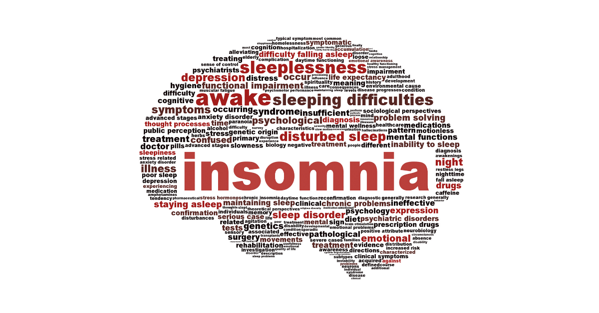
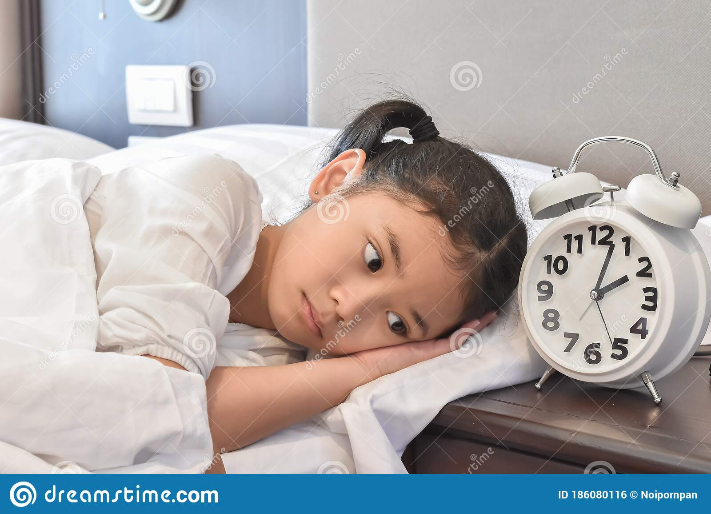
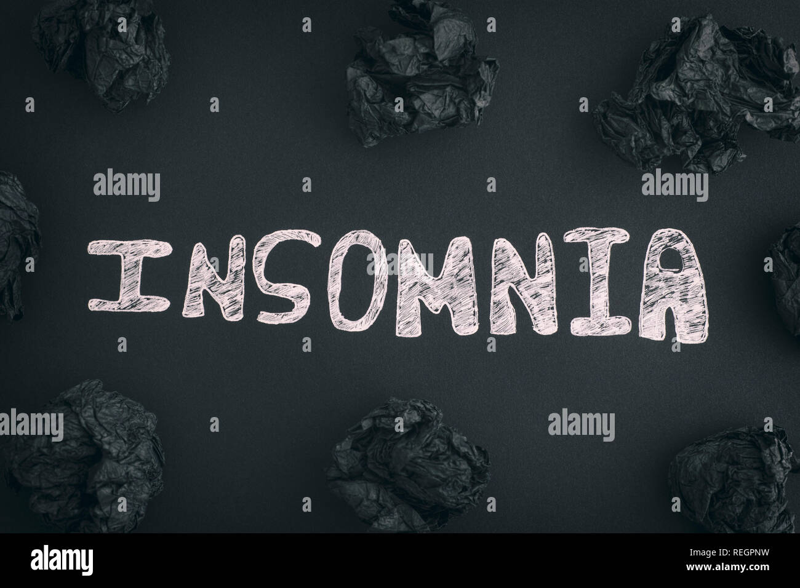
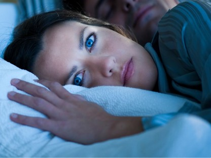
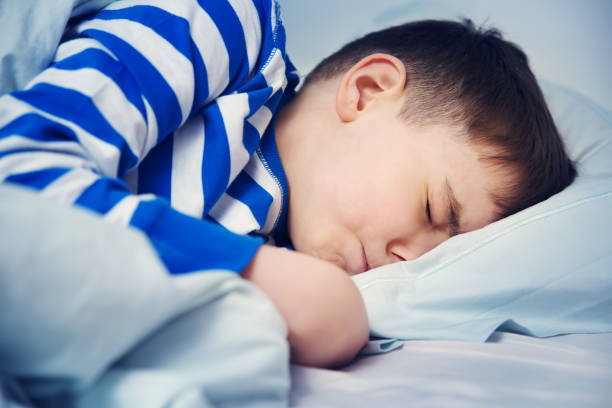

According to Centers for disease control and prevention, adults need at least 7-9 hours of sleep in every 24 hour period, depending on their age. Insomnia is a sleep disorder that regularly effects millions of people Worldwide. Someone with insomnia find its difficult to fall asleep or stay asleep. About a third of all adults reports some insomnia symptoms. 6 to 10% of adults have symptoms severe enough to meet the diagnostic criteria for insomnia disorder.

Fig.1 - INSOMNIA MIND
Click on button! for question(What major changes occur in adults due to insomnia?)
Is Insomnia are increasing in adults day by day –
latest news on insomnia

Insomnia Increases the Likelihood of Memory Decline in Older Adults!

Scientists are studying nondrug therapies that can help insomnia, but cognitive behavioral therapy is one option sleep experts often recommend first.

Insomnia is rarely an isolated medical or mental illness but rather a symptom of another illness to be investigated by a person and their medical doctors.

Can My Insomnia Be Cured? Absolutely. It may not be easy though, as curing insomnia often means improving your sleep hygiene.